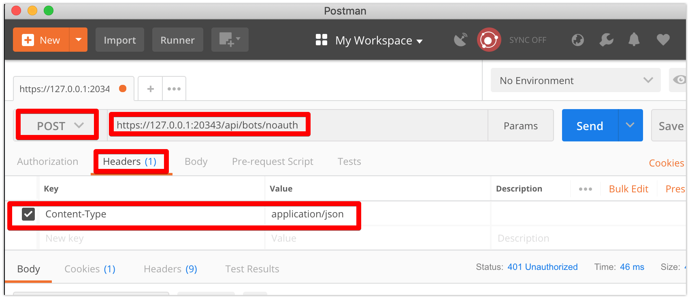

XCode Server Bot 백업 작업 (XCode Server Backup strategy)
-읽음
본문 읽기 전 3줄요약
GEThttps://{xcode server ip}:20343/api/bots : Bots 정보 백업POST메소드로 Bot 등록할 수 있도록 XCode Server 변형POSThttps://{xcode server ip}:20343/api/bots/noauth : 백업한 정보를 이용해 등록
XCode Server Backup 전략
이전 포스팅을 통해 XCode Server로 Bot을 만들어 쉽게 archive하고 ipa를 export 하는 과정을 자동화 했습니다.
XCode Server를 이용한 CI(continuous integration)
프로젝트 진행 중에 빌드머신이 고장 또는 성능향상을 이유로 새로운 빌드머신으로 교체를 할 때, 어떻게 Bots을 쉽게 이전할 수 있을까요?
이 포스팅에서는 Bots의 백업, 다른 빌드머신으로의 이전 과정을 다룹니다.
Apple 가이드 문서, StackOverflow에도 공식적인 백업방법은 언급되어 있지 않습니다.
제가 제시하는 방법은 비공식적으로 XCode Server API를 우회하여 백업, 이전하는 방법으로 XCode Server의 버전 등에 따라 일부 다를 수 있습니다.
XCode Server에 대한 이해
우선, XCode Server의 구조에 대해 알아봅니다. XCode Server는 내부적으로 apache, nodejs, redis, couchDB로 구성되어 있습니다.
여기서 눈여겨 봐야할 부분은 nodejs 입니다.
XCode에서 Bot을 만들고 Integration을 실행시키고 하는 과정을 XCode Server의 API를 호출하는 과정이며, 이 API는 NodeJS가 처리합니다.
1 | /Library/Developer/XcodeServer/CurrentXcodeSymlink/Contents/Developer/usr/share/xcs |
위 경로는 XCode Server가 설치되어 있는 위치이며 여기에서 XCode Server의 코드를 볼 수 있습니다.
XCode Server에서 제공하는 API
XCode Server에서 제공하는 API를 통해 raw한 데이터를 직접 볼 수 있습니다.
1 | https://{xcode server ip}:20343/api/xcodes |
- XCode Server의 XCode 정보를 조회하는 API
하나의 예로 위의 API를 호출하면 다음과 같은 결과가 내려옵니다.
1 | { |
그 외 XCode Server API는 Apple XCode Server API문서에서 확인할 수 있습니다.
네 문서 성의 없습니다. 없는 API도 있고, 제대로 동작 하지 않는 API도 많습니다. Bot에 관련된 API들이 그렇죠.. 정말 이걸 쓰라고 만든건지..
XCode Server에 등록된 Bot 들의 정보 백업하기
XCode Server Bot의 백업도 같은 방법을 사용합니다.
1 | https://{xcode server ip}:20343/api/bots |
- response

브라우저에서 위 주소에 접근하면 Bot에 대한 정보를 볼 수 있습니다.
이 텍스트를 저장 하시면 됩니다.
이 정보를 이용해 다른 빌드머신에 동일한 Bot을 생성할 겁니다.
XCode Server에 백업한 Bot 재등록하기
브라우저를 통해 /api/bots의 주소에 GET 메소드로 request를 날리면 bots들의 정보를 읽어옵니다.
그렇다면 반대로 /api/bots의 주소에 POST 메소드로 request를 날리면?
네, 안됩니다
- 삽질하면서 가장 어이없던 부분인데요, XCode Server API 공식 가이드 문서가 잘못되어 있으며, 인증 이유로도 호출이 되지 않습니다.
XCode Server에 커스텀 route 등록하기
1 | /Library/Developer/XcodeServer/CurrentXcodeSymlink/Contents/Developer/usr/share/xcs/xcsd/routes/routes_bot.js |
vim 또는 텍스트에디터로 위 파일을 열어줍니다. (관리자 권한으로 열어야 수정 가능합니다.)
1 | ; |
NodeJS 코드입니다. NodeJS를 몰라도 어느정도 해석할 수 있습니다.
주의깊게 볼 부분은 21 ~ 23 라인입니다.
1 | router.route('/bots') |
/bots 에 GET으로 request를 보내면 bot.list를 리턴해주며
/bots 에 POST로 request를 보내면 bot을 create 한다는 내용을 유추할 수 있습니다. 다만 중간에 setTTLInDocumentIfNeeded 파라미터를 통해 인증이 필요하다는 내용도 알 수 있습니다.
그 아래 다음 라인을 추가하여 인증 없이 bot을 만들 수 있는 route를 열어줍니다.
1 | router.route('/bots/noauth') |
저장 후 XCode Server를 재실행시킵니다.
1 | sudo xcscontrol --shutdown |
Postman을 이용해 POST request 보내기
이제 백업했던 Bots 정보를 POST로 등록할 순서입니다.
- 먼저 https로 요청을 보내기 때문에, postman에서 한가지 옵션을 설정해야 합니다. Settings > General 에서 SSL certificate verification 옵션을 OFF로 설정합니다.

- Header에서 Content-Type 을 application/json 으로 설정합니다.

Body > raw 에서 백업받은 Bot 하나를 입력합니다.다수의 봇을 동시에 등록은 불가능 합니다, 1번에 1개의 봇의 정보를 입력합니다.
Bot 1개의 정보란?
api/bots 에서 가져온 봇의 정보를 https://jsoneditoronline.org/ 에 넣으면 json의 형태로 쉽게 구조화 할 수 있는데요,
여기서 우측 result 배열의 요소가 각 bot에 해당합니다.
Bot 하나만 가져오면 이렇게 생겼습니다.
이제 Send를 눌러 밀어 넣습니다.
다음과 같은 결과가 나오면 성공!
response code가 201로 떨어지며, response body는 request body가 동일하게 내려옵니다.
이제 XCode를 켜고 XCode Server에 연결하면 추가된 Bot을 볼 수 있습니다.